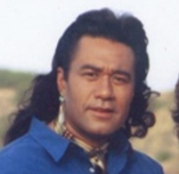

임양규 교수
연구실 대표 교수
Email: trumpetyk09@duksung.ac.kr
SEGA
Sound Exploration & Generative Arts
연구실 대표 교수
Email: trumpetyk09@duksung.ac.kr
박사과정
Email: galent@duksung.ac.kr

석사과정
Email: minhyemoon@duksung.ac.kr
석사과정
Email:

석사과정
Email: botirjonabdulvoxidov@gmail.com
석사과정
Email: watermu@duksung.ac.kr